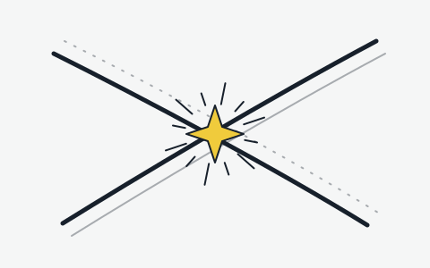
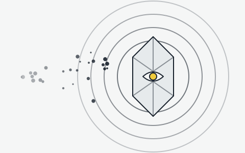
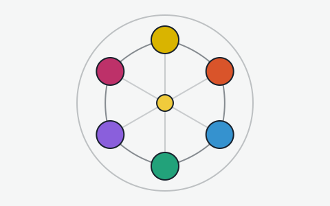

명조 아카이브는 명조: 워더링 웨이브의 세계관과 공명자, 초보자 가이드를 한곳에 모아 둔 팬 아카이브예요.

회피 뒤의 반격, 공명 스킬과 공명 해방, 그리고 동료와 바통을 주고받는 교체 연계까지. 손이 바쁜 만큼 화려한 실시간 액션이에요.

쓰러뜨린 잔상을 에코로 흡수해 전투 중에 불러내요. 세트 효과와 옵션을 맞춰 끼우면 공명자가 한층 강해져요.

회절, 용융, 응결, 기류, 전도, 인멸. 여섯 속성으로 나뉜 공명자들이 저마다의 사연과 전투 방식을 가지고 있어요.